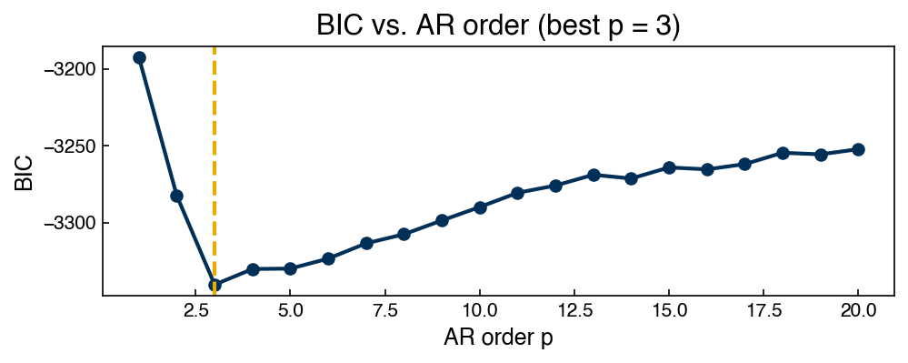
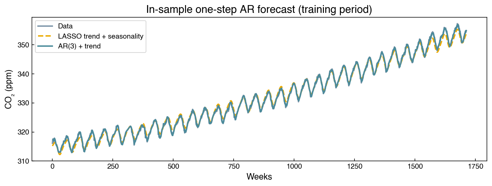
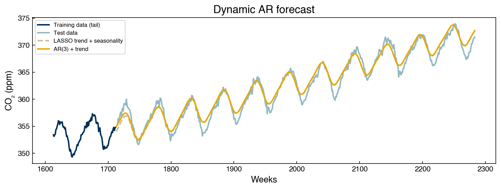
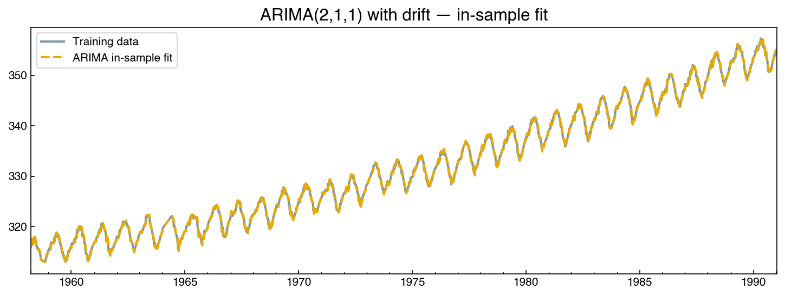
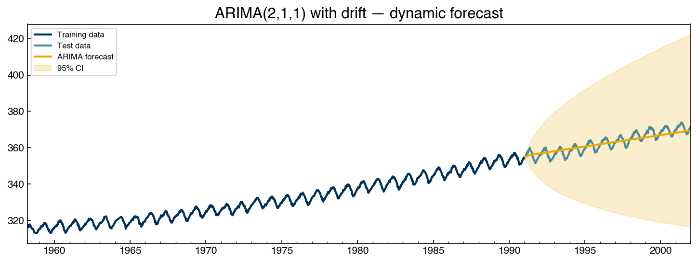

Time Series Models#
Learning Objectives
By the end of this chapter, you will be able to:
Remove a linear trend and seasonal component from a time series using polynomial fitting and LASSO regression on sine-wave features.
Construct an autoregressive (AR) model by casting lag features as a standard linear regression problem, and use BIC and PACF to select the model order \(p\).
Explain the difference between in-sample (one-step) and dynamic (multi-step) forecasts, and understand why dynamic forecasts degrade over time.
Fit an ARIMA(\(p,d,q\)) model using
statsmodels, interpret the summary output, and generate forecasts with 95% confidence bands.Use the ACF/PACF cutoff signatures to identify pure AR or MA processes, and, when both tail off, select \((p, q)\) by a small grid search judged by convergence, information criteria, and held-out forecast error, including a drift term when the data trend.
Describe what a multivariate time series is, why it is harder to model than a univariate one, and where classical (VAR, state-space) and machine-learning (LSTM, probabilistic deep forecasters) approaches fit.
%matplotlib inline
import numpy as np
import pandas as pd
import matplotlib.pyplot as plt
from sklearn.linear_model import LinearRegression, Lasso
import statsmodels.api as sm_api
from statsmodels.tsa.stattools import adfuller
from statsmodels.graphics.tsaplots import plot_acf, plot_pacf
plt.style.use('../settings/plot_style.mplstyle')
clrs = np.array(['#003057', '#EAAA00', '#4B8B9B', '#B3A369', '#377117',
'#1879DB', '#8E8B76', '#F5D580', '#002233'])
# Reload and prepare the CO₂ dataset (same as Topic 6.1)
df_dow = pd.read_excel('data/impurity_dataset-training.xlsx')
dow_df = df_dow[['Date', 'y:Impurity']].copy()
dow_df['Date'] = pd.to_datetime(dow_df['Date'])
dow_df = dow_df.set_index('Date')
co2_raw = sm_api.datasets.co2.load_pandas().data
co2_df = co2_raw.copy()
co2_df['co2_interp'] = co2_df['co2'].interpolate(method='linear')
co2_df = co2_df[['co2', 'co2_interp']]
y = co2_df['co2_interp']
weeks = np.arange(len(y))
print(f'CO₂ series length: {len(y)} weeks')
CO₂ series length: 2284 weeks
Removing Trends#
Before reaching for specialized time-series machinery, notice that de-trending is just a regression problem. We model the series as
where \(f(t)\) is a deterministic function of time and \(r_t\) is what remains. Choosing \(f\) from a library of basis functions — polynomials here, sine waves in the next section — and fitting it by least squares is exactly the general linear regression of Linear Regression, with time as the only input. The feature-library-plus-LASSO strategy below is likewise the same regularized feature selection we used in Nonlinear Feature Engineering: nothing about the tooling is new; only the interpretation changes, since the “features” are all functions of \(t\).
Our hand-rolled approach is a simple version of what the time-series literature calls
harmonic regression (fitting sinusoids at known or candidate frequencies).
Classical alternatives worth knowing: classical decomposition (estimate the trend
with a centered moving average, then average the de-trended values by season) and
STL (Seasonal-Trend decomposition using Loess; Cleveland et al., 1990), the modern
default in most statistical software — statsmodels.tsa.seasonal.STL implements it.
Chapter 3 of Hyndman & Athanasopoulos (see Additional Reading) covers these methods
well. We build the decomposition by hand here because it exposes the connection to
regression; in practice STL is a robust off-the-shelf choice.
Linear Trend Fitting#
Topic 6.1 showed that the CO₂ series is non-stationary, primarily because of a rising long-term trend. A natural first step is to fit and subtract that trend.
# Fit a linear trend to the full CO₂ series
m_lin, b_lin = np.polyfit(weeks, y, deg=1)
trend_linear = m_lin * weeks + b_lin
resid_linear = y.values - trend_linear
fig, axes = plt.subplots(1, 2, figsize=(12, 4))
axes[0].plot(weeks, y.values, label='Data')
axes[0].plot(weeks, trend_linear, '--', label='Linear trend')
axes[0].set_title('CO₂ and linear trend')
axes[0].set_xlabel('Weeks')
axes[0].set_ylabel('CO₂ (ppm)')
axes[0].legend()
axes[1].plot(weeks, resid_linear)
axes[1].set_title('Residuals after linear de-trending')
axes[1].set_xlabel('Weeks')
plt.tight_layout()

The residuals after linear de-trending still show a clear oscillating pattern (annual seasonality) and a slight upward curvature — suggesting the trend is not perfectly linear. We address the seasonality next.
Exercise 118
Compare polynomial trend models for the CO₂ series.
Fit a degree-1 (linear) and degree-2 (quadratic) polynomial trend to the full CO₂ series using
np.polyfit.Plot both trend lines on top of the data. Which fits the long-run trajectory better?
Compute the root-mean-square error (RMSE) between the data and each trend. Report both values. Does the improvement from degree-1 to degree-2 appear physically meaningful?
Removing Seasonality with LASSO#
Sine-Wave Feature Library#
Seasonal patterns are periodic signals. We can model them by generating a library of sine waves at candidate frequencies and offsets, then using LASSO to select the combination that best fits the residuals:
where \(\nu_k\) are candidate periods (in weeks) and \(\phi_k\) are candidate phase offsets.
frequencies = [13, 23, 24, 25, 26, 26.5, 27]
offsets = [0, 1, 2, 3, 4, 5, 6, 7, 8, 9, 10, 11, 12, 13]
def make_sine_features(x, frequencies, offsets):
"""Generate polynomial and sine-wave features from a 1-D time index."""
feats = [x, x**2]
names = ['x', 'x^2']
for freq in frequencies:
for offset in offsets:
feats.append(np.sin((np.pi / freq) * x - (offset / freq) * np.pi))
names.append(f'sin(π·x/{freq} + {offset})')
return np.column_stack(feats), names
X_all, feat_names = make_sine_features(weeks, frequencies, offsets)
print(f'Feature matrix shape: {X_all.shape}')
Feature matrix shape: (2284, 100)
# Fit LASSO to select the most predictive sine-wave features
lasso_trend = Lasso(alpha=0.1, max_iter=5000)
lasso_trend.fit(X_all, y)
yhat_full = lasso_trend.predict(X_all)
model_resid = y.values - yhat_full
# Report selected features
selected = [(feat_names[i], lasso_trend.coef_[i]) for i in range(len(feat_names))
if abs(lasso_trend.coef_[i]) > 0]
print(f'Selected {len(selected)} features:')
for name, coef in selected:
print(f' {name:45s} {coef:+.4f}')
Selected 9 features:
x +0.0157
x^2 +0.0000
sin(π·x/13 + 8) +0.0825
sin(π·x/13 + 9) +0.3651
sin(π·x/26 + 0) +1.9242
sin(π·x/26 + 13) -1.3976
sin(π·x/26.5 + 0) -0.3621
sin(π·x/26.5 + 13) +0.0043
sin(π·x/27 + 4) -0.0130
fig, axes = plt.subplots(1, 2, figsize=(12, 4))
axes[0].plot(weeks, y.values, label='Data', alpha=0.6)
axes[0].plot(weeks, yhat_full, '--', label='LASSO fit')
axes[0].set_title('CO₂ and trend + seasonality fit')
axes[0].set_xlabel('Weeks')
axes[0].set_ylabel('CO₂ (ppm)')
axes[0].legend()
axes[1].plot(weeks, model_resid)
axes[1].set_title('Residuals after trend + seasonality removal')
axes[1].set_xlabel('Weeks')
plt.tight_layout()

# Verify stationarity of residuals
adf_resid = adfuller(model_resid)
print(f'Residuals ADF p-value: {adf_resid[1]:.4f} → P(stationary) ≈ {1 - adf_resid[1]:.4f}')
Residuals ADF p-value: 0.0004 → P(stationary) ≈ 0.9996
The residuals are now stationary. However, the ACF still shows significant autocorrelation at many lags — the trend and seasonality have been removed, but short-term temporal dependence remains: when the residual is above zero this week, it tends to still be above zero next week.
fig, axes = plt.subplots(1, 2, figsize=(12, 4))
plot_acf( model_resid, lags=52, ax=axes[0], title='ACF of residuals')
plot_pacf(model_resid, lags=52, ax=axes[1], title='PACF of residuals')
plt.tight_layout()

Exercise 119
Tune the LASSO regularization for seasonal de-trending.
Sweep
alphaover[0.01, 0.05, 0.1, 0.5, 1.0]forLasso(..., max_iter=5000)fitted toX_allandy.For each
alpha, record the number of selected features (nonzero coefficients) and the ADF p-value of the residuals.Plot the number of selected features vs.
alphaand the ADF p-value vs.alphaon two subplots. Whichalphagives the fewest features while still producing stationary residuals (ADF p < 0.05)?
Differencing: Removing Correlation vs. Modeling It#
Where does this persistence come from, and what can be done about it? Suppose each residual is approximately its predecessor plus a small random shock:
Then neighboring values are strongly correlated by construction — each one mostly “inherits” the last. Differencing exploits the same structure in reverse: the differences \(\Delta r_t = r_t - r_{t-1} \approx \varepsilon_t\) recover just the shocks, which are uncorrelated. That is why one round of differencing collapses the slowly decaying ACF:
model_resid_s = pd.Series(model_resid, index=y.index)
resid_diff = (model_resid_s - model_resid_s.shift(1)).dropna()
adf2 = adfuller(resid_diff)
print(f'Differenced residuals ADF p-value: {adf2[1]:.4e}')
fig, axes = plt.subplots(1, 2, figsize=(12, 4))
plot_acf( resid_diff, lags=52, ax=axes[0], title='ACF — differenced residuals')
plot_pacf(resid_diff, lags=52, ax=axes[1], title='PACF — differenced residuals')
plt.tight_layout()
Differenced residuals ADF p-value: 1.9464e-29

Differencing treats the autocorrelation as a nuisance and removes it. However, the correlation between \(r_t\) and \(r_{t-1}\) is just another way of saying that the recent past predicts the present, so removing it throws away structure that could be used for forecasting. The alternative is to model the dependence instead — write \(r_t\) as an explicit function of its own recent values and fit the coefficients. That is an autoregressive model, and it is the subject of the next section. (Differencing returns in the ARIMA framework, where it plays its proper role: removing non-stationary trends that autoregression alone cannot handle. Our residuals are already stationary, so we model them directly — differencing an already-stationary series is the “over-differencing” pitfall flagged in the Practical Guidance below.)
Auto-Regressive (AR) Models#
From ACF/PACF to Lag Features#
An autoregressive model of order \(p\) predicts \(x_t\) from the \(p\) most recent observations:
This is simply linear regression where the features are lagged values of the target. We apply it to the stationary residuals from the LASSO de-trending — the series whose ACF told us the recent past is informative — by stacking windows of length \(p\) as the feature matrix:
# Temporal train/test split — all "past" is training, "future" is test
train_ratio = 0.75
N_train = int(train_ratio * len(weeks))
N_test = len(weeks) - N_train
past_weeks = weeks[:N_train]
future_weeks = weeks[N_train:]
past_co2 = y.values[:N_train]
future_co2 = y.values[N_train:]
x_resid = model_resid # stationary residuals after trend + seasonality removal
BIC-Based Order Selection#
We sweep \(p\) from 1 to 20 and compute the Bayesian Information Criterion (BIC) for each AR model fitted on the training portion. A lower BIC indicates a better trade-off between fit quality and model complexity.
def BIC(y_true, y_pred, n_params):
err = y_true - y_pred
sigma = np.std(err)
n = len(y_true)
return n * np.log(sigma**2 + 1e-12) + n_params * np.log(n)
p_range = range(1, 21)
bic_list = []
for p in p_range:
AR_X, AR_y = [], []
for i in range(N_train):
if i >= p:
AR_X.append(x_resid[i-p:i])
AR_y.append(x_resid[i])
AR_X = np.array(AR_X)
AR_y = np.array(AR_y)
arm = LinearRegression().fit(AR_X, AR_y)
bic_list.append(BIC(AR_y, arm.predict(AR_X), p))
fig, ax = plt.subplots(figsize=(7, 3))
ax.plot(list(p_range), bic_list, 'o-')
ax.set_xlabel('AR order p')
ax.set_ylabel('BIC')
ax.set_title('BIC vs. AR order')
best_p = list(p_range)[np.argmin(bic_list)]
ax.axvline(best_p, linestyle='--', color=clrs[1])
ax.set_title(f'BIC vs. AR order (best p = {best_p})')
plt.tight_layout()
print(f'Best AR order by BIC: p = {best_p}')
Best AR order by BIC: p = 3

Fitting the AR Model#
Fitting the model is nothing more than ordinary least squares on the lag-feature
matrix. Each row of AR_X is a window of \(p\) consecutive residuals, and the
corresponding entry of AR_y is the residual that immediately followed — so the
regression learns one set of weights \(w_1, \ldots, w_p\) that best maps “the last \(p\)
values” to “the next value” across the entire training period. This is exactly the
regression machinery from Module 1; the only time-series ingredient is how the design
matrix was built.
p = best_p
AR_X, AR_y = [], []
for i in range(N_train):
if i >= p:
AR_X.append(x_resid[i-p:i])
AR_y.append(x_resid[i])
AR_X = np.array(AR_X)
AR_y = np.array(AR_y)
ARM = LinearRegression().fit(AR_X, AR_y)
print(f'AR({p}) train r²: {ARM.score(AR_X, AR_y):.3f}')
print(f'Coefficients (oldest lag → most recent): {np.round(ARM.coef_, 3)}')
print(f'Intercept: {ARM.intercept_:.4f}')
AR(3) train r²: 0.816
Coefficients (oldest lag → most recent): [0.194 0.096 0.642]
Intercept: 0.0047
The fit explains roughly 80% of the residual variance: the autocorrelation that the ACF revealed is predictive structure, and the AR model has captured it. The coefficients are interpretable, too: the most recent lag carries the largest weight (the best single predictor of this week’s residual is last week’s), with smaller contributions from earlier lags. The intercept is nearly zero because the de-trended residuals are centered.
In-Sample (One-Step) Forecast#
For the in-sample check, we feed actual past observations into the model at each step — every prediction looks only one step ahead from real data. This is called a “one-step-ahead” forecast. Because the model predicts the residual, the full prediction adds the LASSO trend + seasonality back on top:
# Predict trend + seasonality for the training period
X_past, _ = make_sine_features(past_weeks, frequencies, offsets)
past_trend = lasso_trend.predict(X_past)
# One-step residual predictions (rows of AR_X hold ACTUAL lagged residuals)
one_step_resid = ARM.predict(AR_X) # aligned with weeks p .. N_train-1
past_predict = past_trend[p:] + one_step_resid
err_ar = past_co2[p:] - past_predict
err_trend = past_co2[p:] - past_trend[p:]
print(f'One-step error std: {np.std(err_ar):.3f} ppm')
print(f'Trend-only error std: {np.std(err_trend):.3f} ppm')
fig, ax = plt.subplots(figsize=(10, 4))
ax.plot(past_weeks, past_co2, label='Data', alpha=0.5)
ax.plot(past_weeks, past_trend, '--', label='LASSO trend + seasonality')
ax.plot(past_weeks[p:], past_predict, label=f'AR({p}) + trend')
ax.set_xlabel('Weeks')
ax.set_ylabel('CO₂ (ppm)')
ax.set_title('In-sample one-step AR forecast (training period)')
ax.legend()
plt.tight_layout()
One-step error std: 0.374 ppm
Trend-only error std: 0.871 ppm

The one-step forecast cuts the error standard deviation roughly in half relative to the trend-only model, at every point in the training period. Keep the caveat in mind, though: a one-step forecast is shallow — each prediction leans on the actual measured values from the immediately preceding weeks, so it demonstrates that short-range structure exists without demonstrating any long-range forecasting power.
Warning
An easy mistake in this reconstruction is to predict differences and then cumulatively sum them back into levels. Summing predicted increments lets every small bias accumulate, so the reconstruction drifts away from the data like a random walk — the resulting “forecast” can wander further from the series than the plain trend, even in-sample. Model the stationary series directly (as here), or, if differencing is truly needed for stationarity, anchor each step’s reconstruction to the measured previous value rather than the model’s own running sum.
Dynamic (Multi-Step) Forecast#
For the test period, we no longer have access to the actual future observations, so each predicted residual must feed back as an input for the next step — a dynamic forecast:
# Seed the dynamic forecast with the last p observed residuals
seed_x = list(x_resid[N_train-p:N_train])
AR_future = []
for i in range(N_test):
new_X = np.array(seed_x[-p:]).reshape(1, -1)
next_val = ARM.predict(new_X).item()
AR_future.append(next_val)
seed_x.append(next_val)
X_future, _ = make_sine_features(future_weeks, frequencies, offsets)
future_trend = lasso_trend.predict(X_future)
future_predict = future_trend + np.array(AR_future)
fig, ax = plt.subplots(figsize=(10, 4))
ax.plot(past_weeks[-100:], past_co2[-100:], label='Training data (tail)', color=clrs[0])
ax.plot(future_weeks, future_co2, label='Test data', color=clrs[2], alpha=0.6)
ax.plot(future_weeks, future_trend, '--', alpha=0.7, color=clrs[3], label='LASSO trend + seasonality')
ax.plot(future_weeks, future_predict, color=clrs[1], label=f'AR({p}) + trend')
ax.set_xlabel('Weeks')
ax.set_ylabel('CO₂ (ppm)')
ax.set_title('Dynamic AR forecast')
ax.legend(fontsize=8)
plt.tight_layout()

Note the behavior at the start of the forecast: the AR component begins at the last observed residual and decays gradually toward zero over the following months, so the prediction starts offset from the trend and relaxes onto it. It does not collapse instantly, since the fitted lag weights sustain the influence of the last observations for a meaningful horizon. However, it cannot oscillate or regenerate structure indefinitely, because it has no access to new measurements.
Note
Why does a dynamic forecast decay to the trend? Iterating the fitted recursion \(\hat{r}_t = b + \sum_i w_i \hat{r}_{t-i}\) on its own outputs is a stable linear system (the fitted weights of a stationary series correspond to roots inside the unit circle), so each iteration shrinks the state geometrically toward the model’s fixed point — the mean of the residuals, i.e., zero. The rate of decay is set by the fitted coefficients: strong short-lag correlation gives a slow decay (a long useful horizon), weak correlation gives a fast one. Prediction errors also compound at each step, so even before the forecast reaches the mean, its reliability has been shrinking. The gap between one-step and dynamic performance is the honest measure of how much genuine predictability the series contains.
Exercise 120
Explore AR model order selection on the Dow impurity series.
Remove a linear trend from the Dow impurity series with
np.polyfitand verify that the residuals are stationary with the ADF test.Sweep AR orders \(p \in \{1, 2, \ldots, 15\}\) on the training portion (first 75%) of the residual series. Compute and plot the BIC for each order.
Fit the best AR model (by BIC), and report the train \(r^2\) and the coefficients. Is the most recent lag the dominant one, as it was for CO₂?
Compute and plot the one-step-ahead in-sample forecast for the training period, and compare its error standard deviation to the trend-only baseline.
ARIMA Models#
The ARIMA Framework#
Manually de-trending, removing seasonality, differencing, and fitting an AR model is instructive, but tedious. The ARIMA(\(p, d, q\)) framework packages these steps into a single model:
Parameter |
Meaning |
How to choose |
|---|---|---|
\(p\) |
AR order — lags in the autoregressive term |
PACF of differenced series (if it cuts off; else bound + search) |
\(d\) |
Integration order — number of differences needed for stationarity |
ADF test (typically \(d=1\) for most economic/physical series) |
\(q\) |
MA order — lags in the moving-average (residual) term |
ACF of differenced series (if it cuts off; else bound + search) |
The moving-average (MA) component uses past forecast errors rather than past observations:
Combining AR(\(p\)), integration (\(d\)), and MA(\(q\)) gives ARIMA(\(p,d,q\)), implemented
in statsmodels.tsa.arima.model.ARIMA.
Choosing \((p, d, q)\)#
We already know \(d = 1\) (one difference makes CO₂ stationary). To find \(p\) and \(q\), inspect the ACF and PACF of the once-differenced series:
diffed = (co2_df['co2_interp'] - co2_df['co2_interp'].shift(1)).dropna()
fig, axes = plt.subplots(1, 2, figsize=(12, 4))
plot_acf( diffed, lags=52, ax=axes[0], title='ACF — first difference')
plot_pacf(diffed, lags=52, ax=axes[1], title='PACF — first difference')
plt.tight_layout()

How are these plots supposed to determine \(p\) and \(q\)? The textbook rules come from exact properties of pure processes:
Process |
ACF |
PACF |
|---|---|---|
Pure AR(\(p\)) |
tails off gradually |
cuts off after lag \(p\) |
Pure MA(\(q\)) |
cuts off after lag \(q\) |
tails off gradually |
Mixed ARMA(\(p,q\)) |
tails off |
tails off |
A pure MA(\(q\)) observation shares shocks only with neighbors up to \(q\) steps away, so its autocovariance is exactly zero beyond lag \(q\) — the ACF cuts off. A pure AR(\(p\)) depends on only \(p\) lags, and the PACF at lag \(k\) is the coefficient on \(x_{t-k}\) after controlling for the intervening lags — exactly zero for \(k > p\). When either plot shows a clean cutoff, the corresponding order can be read straight off it.
Comparing our plots against this table, we see that neither one actually cuts off. The ACF is statistically significant at essentially every lag (with \(n \approx 2300\), the 95% band is only \(\pm 0.04\)), and it oscillates with the annual cycle: negative near lag 26 and positive again at lag 52. The PACF’s first three to five lags dominate, but significant values reappear at higher lags. Both tailing off is the mixed ARMA signature, so the orders cannot be read directly from the plots, and the lag-52 structure indicates that unmodeled seasonality is affecting every lag. In practice, the plots are most useful here as rough upper bounds (\(p, q \lesssim 4\)).
When the plots cannot decide, we can search over candidate orders instead. The grid below fits every \((p, q)\) up to those bounds (with \(d = 1\) and drift — see the note after the table) and records three things: whether the optimizer converged, the in-sample BIC, and the mean absolute error of a dynamic forecast over the held-out period:
import warnings
from statsmodels.tsa.arima.model import ARIMA
# Temporal split
train_co2 = co2_df['co2_interp'].iloc[:N_train]
test_co2 = co2_df['co2_interp'].iloc[N_train:N_train + N_test]
rows = []
for p_ in range(5):
for q_ in range(5):
if p_ == 0 and q_ == 0:
continue
with warnings.catch_warnings():
warnings.simplefilter('ignore') # convergence is recorded explicitly below
fit = ARIMA(train_co2, order=(p_, 1, q_), trend='t').fit()
fc = fit.get_forecast(steps=N_test).predicted_mean.values
rows.append({'p': p_, 'q': q_, 'converged': fit.mle_retvals['converged'],
'BIC': round(fit.bic, 1),
'val MAE (ppm)': round(np.mean(np.abs(fc - test_co2.values)), 2)})
grid = pd.DataFrame(rows)
print('Best 5 by in-sample BIC:')
print(grid.sort_values('BIC').head(5).to_string(index=False))
print('\nBest 5 by held-out forecast MAE (converged models only):')
print(grid[grid.converged].sort_values('val MAE (ppm)').head(5).to_string(index=False))
print('\nModels that failed to converge:')
print(grid[~grid.converged].to_string(index=False))
Best 5 by in-sample BIC:
p q converged BIC val MAE (ppm)
4 2 True 1966.8 3.41
2 3 True 1981.2 3.30
3 2 True 1994.0 3.01
3 4 False 1995.3 3.28
2 2 True 2002.9 2.71
Best 5 by held-out forecast MAE (converged models only):
p q converged BIC val MAE (ppm)
2 1 True 2126.7 2.16
1 1 True 2189.6 2.20
1 2 True 2068.0 2.22
3 1 True 2057.4 2.22
4 1 True 2059.3 2.24
Models that failed to converge:
p q converged BIC val MAE (ppm)
3 4 False 1995.3 3.28
4 3 False 2008.6 3.06
4 4 False 2010.9 2.84
There are three things to notice in these results:
The biggest models do not converge. ARIMA(\(4,1,4\)), the order a naive reading of the plots might suggest, fails to converge, along with its neighbors: with four AR and four MA terms the model is over-parameterized, and near-cancelling AR/MA roots leave the likelihood surface too flat for the optimizer. Estimates from a non-converged fit should not be trusted (the same lesson as checking
result.successin Numerical Optimization). Always confirmmle_retvals['converged'].The two criteria disagree. BIC, computed in-sample, keeps rewarding larger models (its favorite is ARIMA(\(4,1,2\))) because extra ARMA terms partially absorb the unmodeled seasonality. However, those same terms extrapolate badly: the BIC winner has the worst held-out forecast error in the table. When the model class is missing something (here, seasonal terms), information criteria can overfit relative to actual forecasting performance, so the chronological validation split is the more reliable guide.
The simplest reasonable model wins. ARIMA(\(2,1,1\)) forecasts best (MAE ≈ 2.2 ppm), converges cleanly, and is consistent with the PACF (the first few lags carry most of the direct signal). We will use this model going forward.
Note
Two settings used throughout the grid: drift — with \(d \ge 1\), statsmodels
excludes a constant term by default, so forecasts eventually level off at the last
value, clearly wrong for a trending series; trend='t' adds a linear-in-time term,
which after one difference acts as a constant drift. And a caveat on the selection
itself — using the held-out period to choose the model makes it a validation set,
so the winner’s MAE is no longer an unbiased estimate of future error. For an honest
final number you would reserve a third, untouched span — exactly the
train/validation/test discipline of
Model Validation.
Fitting ARIMA#
arima = ARIMA(train_co2, order=(2, 1, 1), trend='t')
with warnings.catch_warnings():
# statsmodels notes that it replaced its default *starting* parameter guesses —
# a startup detail, not a convergence problem; convergence is checked explicitly
warnings.simplefilter('ignore', UserWarning)
arima_fit = arima.fit()
print(f"Converged: {arima_fit.mle_retvals['converged']}")
print(arima_fit.summary())
Converged: True
SARIMAX Results
==============================================================================
Dep. Variable: co2_interp No. Observations: 1713
Model: ARIMA(2, 1, 1) Log Likelihood -1044.758
Date: Thu, 20 Aug 2026 AIC 2099.516
Time: 23:22:12 BIC 2126.743
Sample: 03-29-1958 HQIC 2109.592
- 01-19-1991
Covariance Type: opg
==============================================================================
coef std err z P>|z| [0.025 0.975]
------------------------------------------------------------------------------
x1 0.0241 0.028 0.850 0.395 -0.031 0.080
ar.L1 0.6545 0.043 15.135 0.000 0.570 0.739
ar.L2 0.2181 0.026 8.392 0.000 0.167 0.269
ma.L1 -0.6732 0.042 -16.091 0.000 -0.755 -0.591
sigma2 0.1984 0.006 33.048 0.000 0.187 0.210
===================================================================================
Ljung-Box (L1) (Q): 2.24 Jarque-Bera (JB): 34.58
Prob(Q): 0.13 Prob(JB): 0.00
Heteroskedasticity (H): 1.16 Skew: -0.13
Prob(H) (two-sided): 0.08 Kurtosis: 3.65
===================================================================================
Warnings:
[1] Covariance matrix calculated using the outer product of gradients (complex-step).
# In-sample fit. With d=1 there is no lagged value to difference at t=0, so the
# first "fitted value" is a meaningless placeholder — drop it before plotting.
fitted = arima_fit.fittedvalues.iloc[1:]
fig, ax = plt.subplots(figsize=(10, 4))
train_co2.plot(ax=ax, label='Training data', color=clrs[0], linewidth=2, alpha=0.5)
fitted.plot(ax=ax, label='ARIMA in-sample fit', color=clrs[1], linestyle='--')
ax.set_title('ARIMA(2,1,1) with drift — in-sample fit')
ax.legend()
plt.tight_layout()
mae_insample = np.mean(np.abs(arima_fit.resid.iloc[1:]))
print(f'In-sample mean absolute error: {mae_insample:.3f} ppm')
In-sample mean absolute error: 0.346 ppm

The fit hugs the data so closely that the two curves are nearly indistinguishable — which is exactly what an in-sample, one-step-ahead fit on a strongly autocorrelated series should look like (and, as with the AR model, says little about multi-step forecasting skill).
Dynamic Forecast with Uncertainty Bands#
get_forecast produces the same kind of dynamic, multi-step forecast we built by hand
for the AR model: the model recursion is iterated forward with all future random
shocks set to their expected value of zero, so the predicted mean is what the fitted
dynamics plus the drift term propagate forward from the end of the training data.
Unlike our hand-rolled version, statsmodels also quantifies the forecast’s
uncertainty. During fitting, maximum likelihood estimates the variance
\(\hat{\sigma}^2\) of the one-step innovations \(\varepsilon_t\) (visible as sigma2 in
the summary table above). A forecast \(h\) steps ahead has absorbed \(h\) unrealized
shocks, each propagated through the model’s dynamics, so its variance is the
accumulated sum of those contributions — it grows with the horizon, and for a
differenced (\(d=1\)) model it grows without bound, because the model is integrating a
random walk. The 95% bands are the forecast mean \(\pm 1.96\) standard errors under the
assumption of Gaussian innovations. (Note what is — and is not — included: the bands
account for future randomness, but not for uncertainty in the fitted parameters
themselves, which we studied in
Nonlinear Parameter Estimation,
nor for the model being wrong. Real coverage is usually somewhat worse than nominal.)
forecast_result = arima_fit.get_forecast(steps=N_test)
fc_mean = forecast_result.predicted_mean
fc_ci = forecast_result.conf_int(alpha=0.05) # 95% CI
fig, ax = plt.subplots(figsize=(10, 4))
train_co2.plot(ax=ax, label='Training data', color=clrs[0])
test_co2.plot(ax=ax, label='Test data', color=clrs[2])
fc_mean.plot(ax=ax, label='ARIMA forecast', color=clrs[1])
ax.fill_between(fc_ci.index,
fc_ci.iloc[:, 0], fc_ci.iloc[:, 1],
alpha=0.2, color=clrs[1], label='95% CI')
ax.set_title('ARIMA(2,1,1) with drift — dynamic forecast')
ax.legend(fontsize=8)
plt.tight_layout()
mae_test = np.mean(np.abs(fc_mean.values - test_co2.values))
inside = np.mean((test_co2.values >= fc_ci.iloc[:, 0].values) &
(test_co2.values <= fc_ci.iloc[:, 1].values))
print(f'Test MAE: {mae_test:.2f} ppm; fraction of test data inside 95% bands: {inside:.1%}')
Test MAE: 2.16 ppm; fraction of test data inside 95% bands: 100.0%

Thanks to the drift term, the forecast climbs steadily across the entire test period (without it, the prediction would level off almost immediately at the last training value) and ends within about 2 ppm of the actual final value. The annual oscillation is absent, though — a plain ARIMA model has no seasonal terms, so it cannot regenerate the cycle, and the forecast threads through the middle of the seasonal swings instead. The 95% bands widen over the horizon exactly as the theory above predicts, from under ±1 ppm at the first step to tens of ppm by the end, and they comfortably contain the test data.
Note
Seasonal ARIMA (SARIMA) extends the model to explicitly handle periodic
seasonality, adding seasonal AR and MA terms at a fixed period \(s\) (e.g., \(s=52\)
for annual patterns in weekly data). The model is written SARIMA(\(p,d,q\))(\(P,D,Q\))\(_s\).
For the CO₂ dataset, a SARIMA model with \(s=52\) would preserve the annual oscillation
throughout the forecast horizon. This is beyond the scope of this course, but the
statsmodels SARIMAX class implements it directly.
Exercise 121
Apply an ARIMA model to the Dow impurity series.
Use the Augmented Dickey-Fuller test to determine \(d\) (the number of differences needed for stationarity).
Inspect the ACF and PACF of the differenced series. Do the cutoff signatures apply, or do both tail off? Use them to bound \(p\) and \(q\).
Select \((p, q)\) within your bounds by a small grid search (convergence + BIC + held-out MAE, as in the CO₂ example) and fit the winner on the first 75% of the Dow data (chronological split).
Generate a dynamic forecast for the remaining 25%. Plot the forecast with 95% confidence bands overlaid on the actual test data.
Report the mean absolute error (MAE) on the test set. How does it compare to just using the training mean as the forecast?
Practical Guidance#
The table below summarizes the main modeling choices for univariate time series:
Situation |
Recommended approach |
|---|---|
Clear linear trend, strong seasonal pattern, abundant data |
SARIMA or Prophet (beyond scope) |
Clear trend, moderate autocorrelation after differencing |
ARIMA |
Stationary after 1 difference, PACF cuts off sharply |
AR(\(p\)) with manual lag features |
No obvious trend, low autocorrelation |
Standard regression ignoring time order may suffice |
Non-stationary, complex multi-frequency seasonality |
Remove trend/seasonality with LASSO features, then AR or ARIMA on residuals |
Common pitfalls:
Using \(r^2\) on a non-stationary series is misleading — a model that just predicts the trend achieves high \(r^2\) without capturing any dynamics.
Forgetting to respect chronological order in train/test splits leads to data leakage.
Over-differencing (applying more differences than necessary) destroys useful signal.
Dynamic forecasts always degrade — report confidence intervals rather than treating long-range forecasts as reliable point estimates.
Exercise 122
Use the practical guidance table to choose and evaluate a model for a new scenario.
Given the Dow impurity series:
Check whether the original (undifferenced) series is stationary using the ADF test. Based on the result and the ACF/PACF patterns, select a row from the guidance table above and state which model you would recommend.
Implement your recommended model and generate a dynamic forecast for the last 25% of the series (chronological split). Plot the forecast with 95% confidence bands if applicable.
Compute the mean absolute error (MAE) of the forecast and compare it to the naive baseline (predicting the training-set mean for all future values).
Multivariate Time Series and Advanced Models#
Everything in this chapter has been univariate: one variable, predicted from its own history. But recall where the Dow impurity column came from — a dataset with more than forty simultaneously recorded process variables (flows, temperatures, pressures, steam duties). That full dataset is a multivariate time series: a vector of measurements at every time step,
in which each variable may depend not only on its own past but on the past of every other variable. That cross-coupling is the whole point — an upstream flow disturbance shows up in a downstream temperature some minutes later, and exploiting such lead–lag relationships is how a model can see disturbances coming. It is also what makes the problem difficult:
Parameter explosion. The natural generalization of AR(\(p\)) is the vector autoregression VAR(\(p\)), in which each of the \(k\) variables gets \(p\) lag coefficients for every variable: \(k^2 p\) parameters. For the Dow data with \(k = 40\) and \(p = 5\), that is 8,000 coefficients — demanding enormous data and inviting overfitting.
Heterogeneity. The channels have different units, scales, noise levels, and sometimes different sampling rates or missing-data patterns, so the preprocessing choices from Topic 6.1 must be made per channel — consistently.
Correlation is not causation. Two sensors may move together because one drives the other or because both respond to a third variable; a model can exploit the correlation either way, but interpreting it requires care (the econometrics literature formalizes one useful notion as Granger causality: does adding variable \(j\)’s history improve forecasts of variable \(i\) beyond \(i\)’s own history?).
Classical tools exist — statsmodels implements VAR and its exogenous-input extension VARMAX, and state-space models with Kalman filtering have deep roots in process control — but the parameter-explosion problem is one reason machine learning methods dominate modern multivariate forecasting. Neural networks share structure across channels instead of estimating every cross-coefficient independently: recurrent architectures like the LSTM (Hochreiter & Schmidhuber, 1997) carry a learned hidden state through time, and we build one for exactly this kind of data in Neural Network Architectures; Amazon’s DeepAR (Salinas et al., 2020) trains a single recurrent model across thousands of related series and outputs full probabilistic forecasts; and attention-based (transformer) forecasters are an active research frontier — see Lim & Zohren (2021) for an accessible survey of the deep-learning forecasting landscape. In chemical engineering practice, the same machinery appears as soft sensors: models that predict a hard-to-measure quality variable (like our impurity) from the many easy-to-measure process variables around it — which is precisely the multivariate generalization of what this chapter has been doing with one column.
Exercise 123
Get a first taste of cross-variable structure in the full Dow dataset.
Load the full impurity dataset and select
y:Impurityplus two upstream process variables of your choice (e.g.,x1:Primary Column Reflux Flowandx7:Primary Column Head Pressure).For each process variable, compute the Pearson correlation between the variable lagged by \(k\) hours and the impurity, for \(k \in \{0, 1, \ldots, 24\}\). Plot correlation vs. lag for both variables.
Does either variable correlate more strongly with future impurity than with simultaneous impurity? What would such a lead–lag relationship mean physically, and how could a soft sensor exploit it?
Summary#
Removing trend and seasonality (via polynomial + LASSO sine-wave fitting) isolates the residual stochastic component that is the target for AR/ARIMA modeling.
AR(\(p\)) models cast time series prediction as standard linear regression on lag features. The order \(p\) is selected using the PACF or BIC sweep.
In-sample (one-step) forecasts use actual past observations as inputs and look excellent; dynamic (multi-step) forecasts feed back predictions and degrade quickly as errors accumulate — this gap is a key diagnostic of how much genuine predictability exists beyond the trend.
ARIMA(\(p,d,q\)) packages differencing (\(d\)), autoregression (\(p\)), and moving-average error terms (\(q\)) into a single framework. The parameters are chosen starting from the plots — ADF test (→ \(d\)), and the ACF/PACF cutoff signatures (→ \(q\), \(p\)) where they apply. When both plots tail off (mixed ARMA), the orders are not readable: bound them and grid-search, judging by convergence (over-parameterized ARMA terms often fail to converge), information criteria, and held-out forecast error — which can disagree; when they do, out-of-sample error is the more reliable guide. Include a drift term (
trend='t') so forecasts of trending data continue the trend. Forecast bands come from the estimated innovation variance accumulated over the horizon; they cover future randomness, not parameter or model error.For seasonal data like CO₂, SARIMA extends ARIMA with seasonal terms; for purely trend-plus-noise industrial data like Dow impurity, standard ARIMA or AR models are usually sufficient.
Multivariate time series (vectors of coupled measurements, like the full Dow process dataset) offer lead–lag information across variables at the cost of a parameter explosion (VAR needs \(k^2 p\) coefficients). Neural approaches (LSTM, DeepAR) share structure across channels and dominate modern practice; in ChE this appears as soft sensors.
Additional Reading#
Hyndman & Athanasopoulos, Forecasting: Principles and Practice (3rd ed.) — Chapter 3 covers decomposition and de-trending (classical decomposition, STL); Chapters 8–9 cover ARIMA and SARIMA in depth. R examples, but most concepts transfer directly to Python/statsmodels: otexts.com/fpp3
Cleveland, R. B., Cleveland, W. S., McRae, J. E., & Terpenning, I. (1990), “STL: A seasonal-trend decomposition procedure based on Loess,” Journal of Official Statistics 6(1), 3–73 — the classic de-trending/decomposition method (
statsmodels.tsa.seasonal.STL)Box, G. E. P., Jenkins, G. M., Reinsel, G. C., & Ljung, G. M. (2015), Time Series Analysis: Forecasting and Control (5th ed., Wiley) — the foundational reference for ARIMA (“Box–Jenkins”) modeling
Lim, B. & Zohren, S. (2021), “Time-series forecasting with deep learning: a survey,” Phil. Trans. R. Soc. A 379: 20200209 — accessible overview of neural forecasting (RNN/LSTM, attention, hybrid methods)
Salinas, D., Flunkert, V., Gasthaus, J., & Januschowski, T. (2020), “DeepAR: Probabilistic forecasting with autoregressive recurrent networks,” International Journal of Forecasting 36(3), 1181–1191
Seabold, S. & Perktold, J. (2010), “statsmodels: Econometric and statistical modeling with Python,” Proceedings of the 9th Python in Science Conference